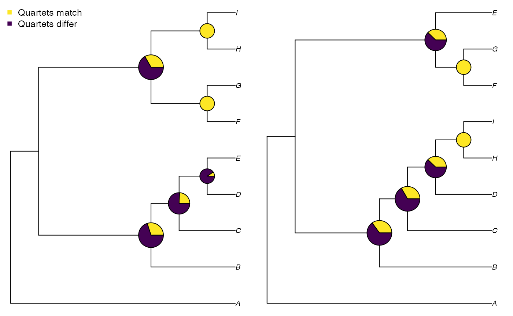

vignettes/Using-Quartet.Rmd
Using-Quartet.RmdThis document should contain all you need to get started measuring tree distances with ‘Quartet’. If you get stuck, please let me know so I can improve this documentation.
Instructions for loading phylogenetic trees into R can be found in a separate vignette. For these examples, we’ll enter two simple trees by hand:
We can calculate distances between pairs of trees using the ‘Quartet’ package.
First we’ll install the package. We can either install the stable version from the CRAN repository:
install.packages('Quartet')or the development version, from GitHub – which will contain the latest features but may not be as extensively tested:
devtools::install_github('ms609/Quartet')Then we’ll load the package into R’s working environment:
Now the package’s functions are available within R. Let’s proceed to calculate some tree distances.
Calculating the distance between two trees is a two stage process. For a quartet distance, we first have to calculate the status of each quartet:
statuses <- QuartetStatus(tree1, tree2)Then we convert these counts into a distance metric (or similarity measure) that suits our needs – perhaps the Quartet Divergence:
QuartetDivergence(statuses, similarity = FALSE)## [1] 0.6031746We can calculate all similarity metrics at once using:
SimilarityMetrics(statuses, similarity = TRUE)## DoNotConflict ExplicitlyAgree StrictJointAssertions
## [1,] 0.3968254 0.3968254 0.3968254
## SemiStrictJointAssertions SymmetricDifference MarczewskiSteinhaus
## [1,] 0.3968254 0.3968254 0.2475248
## SteelPenny QuartetDivergence SimilarityToReference
## [1,] 0.3968254 0.3968254 0.3968254It can be instructive to visualize how each split in the tree is contributing to the quartet similarity:
VisualizeQuartets(tree1, tree2)
Rather than using quartets, we might want to use partitions as the basis of our comparison:
SimilarityMetrics(SplitStatus(tree1, tree2))## DoNotConflict ExplicitlyAgree StrictJointAssertions
## [1,] 0.3333333 0.3333333 0.3333333
## SemiStrictJointAssertions SymmetricDifference MarczewskiSteinhaus
## [1,] 0.3333333 0.3333333 0.2
## SteelPenny QuartetDivergence SimilarityToReference
## [1,] 0.3333333 0.3333333 0.3333333If you have more than two trees to compare, you can send a list of trees (class: list or multiPhylo) to the distance comparison function.
You can calculate the similarity between one tree and a forest of other trees:
library('TreeTools', quietly = TRUE, warn.conflicts = FALSE)
oneTree <- CollapseNode(as.phylo(0, 11), 14)
twoTrees <- structure(list(bal = BalancedTree(11), pec = PectinateTree(11)),
class = 'multiPhylo')
status <- SharedQuartetStatus(twoTrees, cf = oneTree)
QuartetDivergence(status)## bal pec
## 0.4939394 0.6272727Or between one tree and (itself and) all other trees in the forest:
forest <- as.phylo(0:5, 11)
names(forest) <- letters[1:6]
status <- SharedQuartetStatus(forest)
QuartetDivergence(status)## a b c d e f
## 1.0000000 0.9757576 0.9757576 0.9333333 0.9121212 0.9333333Or between each pair of trees in a forest:
status <- ManyToManyQuartetAgreement(forest)
QuartetDivergence(status, similarity = FALSE)## a b c d e f
## a 0.00000000 0.02424242 0.02424242 0.06666667 0.08787879 0.06666667
## b 0.02424242 0.00000000 0.02424242 0.08787879 0.06666667 0.06666667
## c 0.02424242 0.02424242 0.00000000 0.08484848 0.08484848 0.04242424
## d 0.06666667 0.08787879 0.08484848 0.00000000 0.04242424 0.04242424
## e 0.08787879 0.06666667 0.08484848 0.04242424 0.00000000 0.04242424
## f 0.06666667 0.06666667 0.04242424 0.04242424 0.04242424 0.00000000Or between one list of trees and a second:
status <- TwoListQuartetAgreement(forest[1:4], forest[5:6])
QuartetDivergence(status, similarity = FALSE)## e f
## a 0.08787879 0.06666667
## b 0.06666667 0.06666667
## c 0.08484848 0.04242424
## d 0.04242424 0.04242424To calculate how many quartets are unique to a certain tree (akin to the partitionwise equivalent ape::prop.clades), use:
interestingTree <- as.phylo(42, 7)
referenceTrees <- list(BalancedTree(7), PectinateTree(7))
status <- CompareQuartetsMulti(interestingTree, referenceTrees)status['x_only'] = 23 quartets are resolved in a certain way in interestingTree, but not resolved that way in any referenceTrees.
You may wish to:
Read more about Quartet distances
Review alternative distance measures and corresponding functions
Interpret or contextualize tree distance metrics